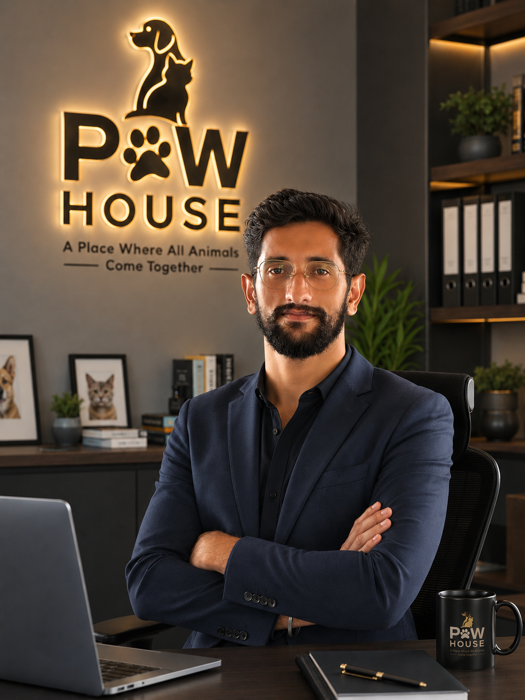

The people behind Δ Delta — Paw House Marketplace. Real animal-care expertise, from the clinic to the field, built into every listing on the platform.

FounderFounder, Paw House · B.V.Sc. & A.H.
जो तूने कर दिया उसे देने के लिए मैं बाध्य हूँ फिर चाहे अच्छा हो या बुरा
Dr. Sahil Choudhary founded Paw House with a background most marketplace founders don't have: a formal veterinary education. He holds a Bachelor of Veterinary Science & Animal Husbandry (B.V.Sc. & A.H.), giving him a clinical, first-hand understanding of animal health and welfare.
That veterinary grounding is the foundation of Paw House: a marketplace built by someone who has actually studied and worked with animals, not just built software around them.
CEO, Δ Delta · Livestock Inspector
Anil Choudhary leads Δ Delta with a background most marketplace founders don't have: hands-on animal husbandry. He completed his Animal Husbandry Diploma in 2016 from RAJUVAS University, Bikaner, Rajasthan — one of India's leading veterinary and animal sciences universities.
Since graduating, Anil has worked as a livestock inspector across Gujarat, Haryana, Noida, Delhi, Bengaluru, and Rajasthan, gaining first-hand experience with animal care, breed standards, and livestock welfare in every region he has served. He currently works in Himachal Pradesh, continuing his field work while leading Δ Delta.
That ground-level experience is the foundation of Δ Delta: a marketplace built by someone who has actually worked with animals, not just built software around them.
From qualifying as a livestock inspector to his current posting, Anil's work has followed the animals — state to state.
The expertise behind Δ Delta's listings.
Dr. Sahil Choudhary — Bachelor of Veterinary Science & Animal Husbandry, Founder of Paw House.
Anil Choudhary — field experience across Gujarat, Haryana, Noida, Delhi, Bengaluru, Rajasthan, and now Himachal Pradesh.
Direct experience in post-operative care, stock management, and kennel management at an Animal Birth Control centre.